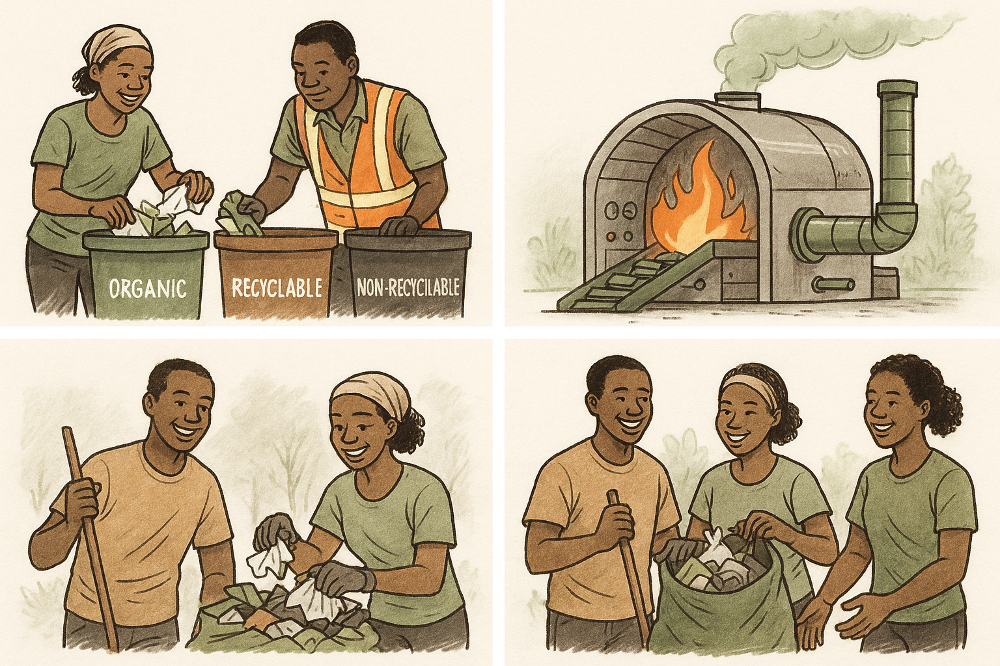
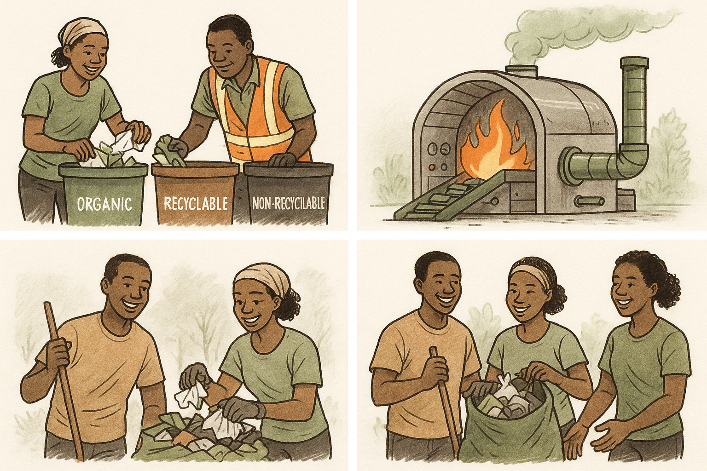

At Zaka Energy, we believe that trash isn’t the end — it’s the beginning. We’re a Nakuru-based initiative dedicated to transforming waste into clean, reusable energy through smart waste sorting, recycling, and innovative incineration technologies.
Our goal is to help communities reduce waste, protect the environment, and recover energy through our eco-friendly system that:
Sorts recyclable and non-recyclable waste
Converts waste into usable heat and energy
Promotes environmental sustainability
How It Works
Waste is collected and separated into recyclable and non-recyclable materials. Recyclables are sold or reused, while the rest is safely burned in a chamber that converts it into clean heat energy. Emissions are filtered and monitored to ensure environmental safety.
Get Involved
Partner with us, sponsor our pilot project, or volunteer for a cleaner, greener future. Together, we can power our communities sustainably.

 
